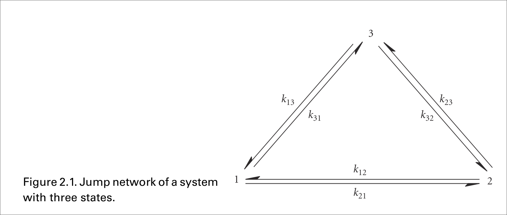
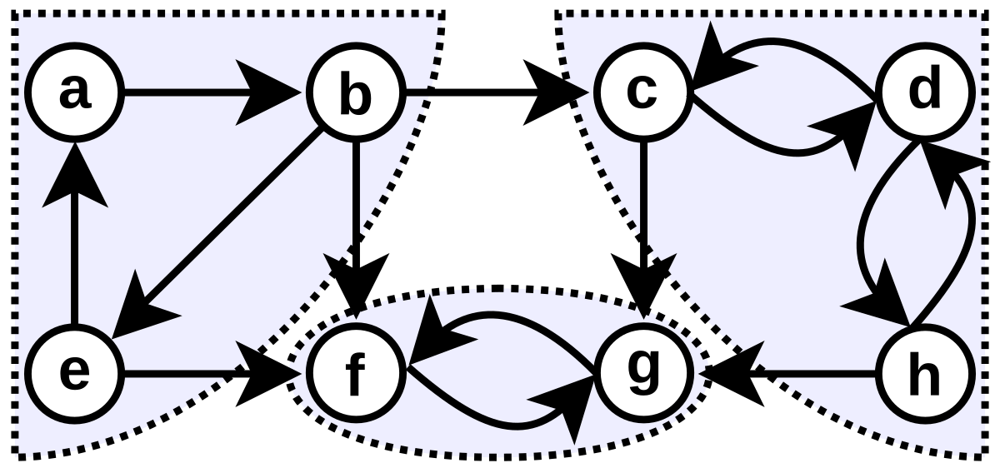

15 minutes
Equilibrium innit?
Introduction
This is technically my first blog post containing actual material here. I gave a presentation for the Maths Club at my University. The slides for which were made in LaTeX using beamer and can be found here, on my GitHub. I just converted the latex document to markdown using Pandoc and after some minor tweaks, I have posted it here. Enjoy :)
A Stochastic Description
We want to describe physical systems involving a large number of degrees of freedom, say a gas isolated in a container, using stochastic processes. The motivation behind doing that is that we want look at probabilities to determine how they evolve. The initial part details how we might go about such a description. Then we delve into our original question. We generally, in naive treatments treat steady state and equilibrium as the same condition. But as the description goes, we will see that attaining equilibrium requires more constraints than attaining steady state.
Stochastic Process
A stochastic process is a sequence of random variables where the indexing of the variables often carries the notion of time.
An example would be Brownian Motion, which is described by the Wiener process. \[P(\hat{W}(t+\Delta t)=x | \hat{W}(t)=x’) = \frac{1}{\sqrt{2 \pi \Delta t}}\exp(-\frac{(x-x’)^2}{2 \Delta t})\]
Markov Chains
Most of the physical processes that we study in classical statistical physics is modelled as Markov Chains.
Let \(\{X_n\}\) be a stochastic process. The markov property is defined as \[\mathbb{P}(X_{n+1}|X_n,X_{n-1},...,X_0) = \mathbb{P}(X_{n+1}|X_n)\] Any stochastic process satisfying the Markov property is called a Markov Chain.
Essentially the future of the system is independent of the past given the present state.
Continuous Time Markov Chains(CTMC)
These are markov chains with the index as time \(\{X(t)\}_t\). Let us define a state space as the set of all values \(S\) a random variable can assume. Then we use the notation \[P(X(t) = s) \equiv P(s;t)\] We can rewrite the markov property as \[P(s_n;t_n|s_{n-1};t_{n-1},s_{n-2};t_{n-2},…,s_0;t_0) = P(s_n;t_n|s_{n-1};t_{n-1})\] where \(s,s_i \in S ~ \forall i\).
Now using the theorem of total probability we can write the Chapman Kolmogorov equation as
\[P(s;t|s_0;t_0) = \sum_{s' \in S} P(s;t|s';t')P(s';t'|s_0;t_0)\] where \(t > t' > t_0\)
If we consider a continuous state space, which we do for most processes, the sum above will just be replaced with an integral over the intermediate steps.
When developing models to observe behaviour of systems experimentally, we need to discretize our continuous spaces, be it time or state space. We now choose a time interval \(dt\) and rewrite the Chapman Kolmogorov equation, dropping the explicit dependence on \(x_0,t_0\). This time interval \(dt\) is the smallest time over which our observation makes sense. The system might undergo some evolution within \(dt\) time, but we do not care about that. \[P(s;t+dt) = \sum_{s’ \in S} P(s;t+dt|s’;t)P(s’;t)\] Since this is an infinitesimal time interval, we can write the above equation as \[P(s;t+dt|s’;t) = \delta_{ss’} +Q_{ss’}dt + o(dt)\] where \(Q\) is the transition rate matrix.
Some nice books that delve into these concepts in a much more nuanced than my imbecile self are [Feller][5] , for the more mathematically inclined and [vanKampen][4] for physics students.
Transition Rate Matrix
The transition rate matrix is quite important in the description of our physical systems, so it is worth our while to check out some of its properties.
The transition rate matrix should satisfy the following conditions
-
\(Q_{ss’} \geq 0\) for \(s \neq s’\)
-
\(Q_{ss} = -\sum_{s’ \neq s} Q_{ss’}\)
The first condition ensures that the transition rate is non-negative and the second condition essentially ensures that the probability of transitioning from a state \(s\) to any state is 1.
Thus we can write \[\mathbb{P}(t+dt) = \mathbb{I} + Qdt\] where \(\mathbb{I}\) is the identity matrix. People who study infinitesimal transformations in say QM, might see that the probability matrix \(\mathbb{P}\) is an infinitesimal transformation matrix with the transition rate matrix \(\mathbb{Q}\) as our generator of that transformation.
We define \(k_{xx’}\) as the jump rate from state \(x’\) to \(x\). We thus define the elements of the transition rate matrix as \[p(x;t+dt|x’;t’ ) = Q_{xx’} = k_{xx’} \quad \quad x \neq x’\] And the diagonal elements are thus given as \[Q_{xx} = -\sum_{x’ \neq x} k_{xx’}\]
We also assume that the elements \(k_{xx’}\) do not change with time.
The change in probability of being in state \(x\) at time \(t\) is the inflow of probability from all other states which is \(k_{xx’}p(x’;t)\) minus the outflow of probability \(k_{x’x}p(x;t)\). We can now write the master equation as \[\frac{dp(x;t)}{dt} = \sum_{x’ \in S} k_{xx’}p(x’;t) - k_{x’x}p(x;t)\] This becomes clearer when we define the probability current.
Master Equations
These equations describe the time evolution of the system that are modelled as being in the a probabilistic combination of a set of states at any given time. These are phenomenologically modelled first order differential equations.
These are used in a variety of fields in physics, and other related
fields. These are used for studying birth and death processes,
non-equilibrium statistical mechanics, chemical reactions, and a whole
lot more.
The most common one that we see is the one used here is of the form
\[\frac{d \bold{p}}{ dt} = \mathbb{A}\bold{p}\] where \(\mathbb{A}\) is
the matrix of connections and \(\bold{p}\) is the probability distribution
column vector.
Probability Current
The probability current is defined as the flow of probability from state \(x'\) to state \(x\). We define the probability current as \[J_{xx'} = k_{xx'}p(x';t) - k_{x'x}p(x;t)\]
The master equation can now be written as \[\frac{dp(x;t)}{dt} = \sum_{x’ \in S} J_{xx’}\]
A bit of physics coming up ahead \(:)\)
If for any allowed jump \(x \rightarrow x'\)(i.e. \(k_{xx'} > 0\)), the reverse jump \(x' \rightarrow x\) \((k_{x'x}>0)\) is also allowed, then the system is said to be microscopically reversible.
Jump Networks
These systems are quite often represented as jump networks, where the nodes of the graph represent the states \(x\) and the arrows(edges) \(x’ \rightarrow x\) represent the allowed jumps i.e. the jumps with non-zero transition rates(\(k_{xx’}>0\)).
The jump networks dealt with in physics are strongly connected. That is, given any two states \(x\) and \(x'\), there is a non-zero probability of transitioning from \(x\) to \(x'\) in a finite number of steps.
This property has some physical justification. Coupled together with microscopic reversibility, this property ensures that the graphs aren’t disconnected. Disconnected graphs often lead to systems with non-interacting components, which can be studied independently reducing to the strongly connected graph.\
Strongly connected graphs also posses a property called Irreducibility. Irreducibility is a necessary condition for the Perron Frobenius theorem to hold.
Here are is an example of a jump network :

Steady State & Equilibrium Distribution
Conditions
Steady state and equilibrium distribution are often used interchangeably. However, they are defined quite differently. The condition for a system to be in equilibrium is a bit more constrained than that of a steady state.
The necessary condition for both to hold is that the probability of being in a state \(x\) at time \(t\) is independent of time. Thus, essentially our master equation equates to \(0\). \[\frac{dp^{st}(x)}{dt} = \sum_{x’ \neq x} J_{xx’} = 0\]
We will show that under certain conditions, the system relaxes to a stationary state. \[\lim_{t \to \infty} p(x;t) = p^{st}(x)\]
Detailed Balance Condition
The independence of \(p(x)\) on time can be ensured by the following conditions:
-
\(\sum_{x’ \neq x} J_{xx’} = 0\)
-
\(J_{xx’} = 0\) for all states \(x,x’\)
Condition 1 is the condition for a steady state, while condition 2 is the condition for equilibrium.
The detailed balance condition is defined as \[k_{xx'}p^{st}(x') = k_{x'x}p^{st}(x) \quad \forall ~x,x' \in S\] \[J_{xx'} =0 \quad \forall x,x' \in S\]
When the jump networks satisfy the detailed balance condition, the system is said to be in equilibrium.
Sometimes some books have another definition, which uses the fact that under equilibrium conditions the system possesses time reversal symmetry. A lot of Statistical mechanics books use a very nice example to demonstrate this point. Suppose we have a movie that records how the gas particles confined within a volume move. Under equilibrium, the viewer will not be able to distinguish between the frames if the movie if played either forwards or backwards. This also demonstrates the concept of reversibility. One can view this time reversal definition if they wish to at [NaotoShiraisi][3].
The time reversibility at equilibrium also gives rise to a nice question. What happens when the system is not at equilibrium? Then we have an arrow of time. This notion of the arrow of time is due to the increase of entropy. The system will move in a trajectory in the phase space which allows for the increase of entropy. Read this paper called by [Jarzynski][8] for a nicer discussion. Let’s not digress and get back to the problem at hand.
Perron Frobenius Theorem
Irreducibility
A matrix \(\mathbb{A}\) is said to be reducible when there exists a Permutation matrix \(P\) such that \[ P^TAP = \begin{pmatrix} \mathbb{X}& \mathbb{Y} \\ 0 & \mathbb{Z} \end{pmatrix} \] where \(\mathbb{X}\) and \(\mathbb{Z}\) are square matrices.
We can easily see that if all the elements of \(\mathbb{A}\) are positive, then the matrix is irreducible. This is a necessary condition for the Perron Frobenius theorem to hold.
We can reframe the Irreducibility problem in terms of graphs.
- The graph \(G(\mathbb{A})\) of a matrix \(\mathbb{A}\) is a
directed graph on \(n\) nodes \(\{N_1,...,N_n\}~\) in which there is a
directed edge from \(N_i\) to \(N_j\) if and only if \(A_{ij} \neq 0\).
- A graph \(G(\mathbb{A})\) is called strongly connected if for every
pair of nodes \(N_i\) and \(N_j\) there is a directed path from \(N_i\) to
\(N_j\).
- A matrix \(\mathbb{A}\) is irreducible iff the graph of the matrix is
strongly connected.
We have already assumed that the jump network is strongly connected.
Strongly Connected Graphs
We can also think of Irreducibility from the point of view of the markov chains. Two states are said to be communicating if there is a non-zero probability of transitioning from one state to the other in a finite number of steps. This is an equivalence relation and thus partitions the state space into equivalence classes. The markov chain is said to be irreducible if there is only one equivalence class, which is the state space of the Markov chain.
Here in our jump networks any state can be reached from any other state in a finite number of steps. Thus our markov chain is irreducible.
Here is a graph with three strongly connected components.

Primitive Matrices
- A matrix \(\mathbb{A}\) is called primitive if there exists a positive
integer \(k\) such that \(\mathbb{A}^k\) is a positive matrix (i.e. all
elements are positive).
- A matrix \(\mathbb{A}\) is primitive if it has only one eigenvalue on
the spectral circle.
- A non-negative irreducible matrix \(\mathbb{A}\) is primitive with
\(r = \rho(\mathbb{A})\) iff
\(\lim_{k \to \infty} (\mathbb{A}/ r)^k\) exists, in which case
\[\lim_{k \to \infty} \left(\frac{\mathbb{A}}{r}\right)^k = \frac{p q^{T}}{q^{T} p} > 0\]
where \(p\) and \(q\) are the Perron vectors for \(\mathbb{A}\) and
\(\mathbb{A}^T\) respectively.
The Perron Frobenius Theorem
Let \(\mathbb{A}\) be an irreducible matrix. Then we can say the following statements,
- There exists a positive real number \(\lambda\) such that
\[\mathbb{A}\pi = \lambda \pi\] called the Perron-Frobenius
eigenvalue. Moreover, the eigenvalue is the spectral radius of the
matrix.
- The eigenspace corresponding to the Perron-Frobenius eigenvalue is
one-dimensional, that is, the corresponding eigenvector is
non-degenerate.
- Then there exists a unique probability vector \(\pi\) such that
\[\mathbb{A}\pi = \lambda \pi\] called the Perron vector. Moreover,
the vector \(\pi\) is strictly positive.
- Furthermore, there are no non-negative eigenvectors of \(\mathbb{A}\)
except for all positive multiples of \(\pi\).
Stationary State Distribution
Let \(P\) be the transition probability matrix for
an irreducible Markov chain and let \(\pi\) be the perron vector for the
matrix \(P\).
- The kth step probability matrix is given by \(P^k\) since the
\((i,j)\)th entry of \(P^k\) is the probability of transitioning from
state \(j\) to state \(i\) in exactly \(k\) steps.
- The \(k^{th}\) step distribution is given by \(p(k) = P^k p(0)\)
- If \(\bold{P}\) is primitive and if \(e\) denotes the column of all
ones, then the limit
\[\lim_{k \to \infty} \bold{P}^k = \pi e^T \quad \quad \quad \text{and} \quad \quad
\lim_{k \to \infty} p(k) = \pi\]
[Proof: ]
All stochastic matrices \(\bold{P}\) have a spectral radius
\(\rho(\bold{P}) =1\). The spectral radius is the absolute value of the largest eigenvalue of the matrix.
All column sums equal to 1. Thus, \(e\) is an
eigenvector of \(\bold{P}^T\) with eigenvalue \(1\), where \(e\) is the column
vector with all ones in its entries. We also have the 1-norm
\(\lVert \bold{P} \lVert_1 = 1\). Using the fact that
\(\rho(\star) \leq \lVert\star\rVert\) for every matrix norm(See [Meyer][2]),
we get that
\[1 \leq \rho(\bold{P}) \leq \lVert{\bold{P}}\rVert_{1} = 1 ~~~ \Rightarrow \rho (\bold{P}) =1\]
We know that \(\bold{P}\) is primitive with \(\rho(\bold{P}) = 1\), we know that \[\lim_{k \to \infty} \bold{P}^k = \frac{p q^T}{q^T p}\] where \(p\) and \(q\) are the perron vectors for \(\bold{P}\) and \(\bold{P}^T\) respectively. The perron vector for \(\bold{P}^T\) is \(e\) and let the perron vector for \(\bold{P}\) be \(\pi\).
We thus have, \[\lim_{k \to \infty} \bold{P}^k = \frac{\pi e^T}{e^T \pi}\] From the conservation of probability we have that \(\sum_i \pi_i =1\), we have that \(e^T\pi = \sum_i \pi_i = 1\).Thus we have \[\lim_{k \to \infty} \bold{P}^k = \pi e^T\] Now we have \[\lim_{k \to \infty} p(k) = (\lim_{k \to \infty} \bold{P}^k) p(0)= \pi e^Tp(0)\] Again \(e^Tp(0) = \sum_i p_i(0) = 1\). This leads to \[\lim_{k \to \infty} p(k) = \pi\]
Note that the stationary limit is independent of the initial distribution \(p(0)\) here.
We now actually verify that \(\pi\) is indeed the stationary distribution. Let us recast the master equation into matrix form. \[\frac{d p(t)}{dt} = Q p(t) = \frac{1}{dt}(\bold{P}- \mathbb{I}) p(t)\] where \(Q\) is the transition rate matrix. Now we have \[(\bold{P}- \mathbb{I})\pi = \bold{P}\pi - \pi = \pi -\pi = 0\] Thus the infinite time limit of the probability distribution is indeed the stationary distribution. \[\Rightarrow \frac{d \pi }{dt} = 0\]
Now the stationary distribution must be unique since the Perron root of any irreducible matrix has a one dimensional eigenspace. Thus the eigenvector must be unique due to the conservation of probability.
Stationary State Dist. for Imprimitive matrices Let \(P\) be the
transition probability matrix for an irreducible Markov chain and let
\(\pi\) be the perron vector for the matrix \(P\).
* If \(\bold{P}\) is imprimitive and if \(e\) denotes the column of all
ones, then the limit
\[\lim_{k \to \infty} \frac{\mathbb{I} + \bold{P}+ ... +\bold{P}^{k-1}}{k} = \pi e^T\]
and
\[\lim_{k \to \infty} \frac{p(0) + p(1) + ...+p(k-1)}{k} = \pi\]
We use Cesaro sums to define the stationary state probability distribution. However, we won’t deal with it here. One can refer to [Meyer][2] for a detailed discussion.
Graph Theory
Preliminaries
These are just some definitions just to straighten things up. For more detailed discussions see [Diestel][6] or the more friendly[Trudeau][7].
-
A graph is a collection of vertices and edges. The edges connect the vertices.
-
The degree of a vertex is the number of edges connected to it.
-
A walk is a sequence of vertices connected by edges.
-
A trail is a walk with no repeated edges.
-
A cycle is a non-empty trail that starts and ends at the same vertex.
-
A connected graph is a graph where there is a path between every pair of vertices.
Trees
A tree is a connected graph with no cycles.
Here is one property of a tree that we plan to use later.
A tree with \(n\) vertices has \(n-1\) edges.
Handshaking Lemma
The sum of the degrees of all the vertices of a graph is equal to twice the number of edges. \[\sum_{i=1}^{n} d_i = 2|E|\] where \(d_i\) is the degree of the \(i\)th vertex and \(|E|\) is the number of edges.
An "obvious" Theorem
A tree has at least two vertices of degree 1.
[Proof]
Every tree has \(n-1\) edges, so the sum of the degrees of all vertices of
any tree has to be \(2(n-1)\). But if there are fewer than two vertices of
degree one, then the sum of the degrees of all vertices must be at least
\(2(n-1)+1\), which is a contradiction.
Equilibrium Distribution
Trees
Let the jump network be a tree. Then the stationary state distribution is the equilibrium distribution.
[Sketch of the Proof]
We know that there exists at least \(2\) vertices with degree \(1\). Let us
label one of them as \(x\). Thus, for this vertex
\(\sum_{x’ \neq x} J_{xx’} = 0\) for all states \(x’\) connected to it,
under the stationary distribution. Since this is only connected to
another vertex say \(a\), We have \(J_{xa} = 0\). We can then remove the
vertex \(x\) and the edge \({x,a}\). This is still a tree, so we can do
this iteratively. We can reach a point where we have only one vertex
left. For the lone vertex, the detailed balance condition is trivially
satisfied. Thus, the equilibrium distribution is the stationary
distribution.
Cyclic Networks
A cyclic network is a graph with a cycle in it.
The Kolmogorov Loop condition states that the system admits an equilibrium distribution if for any sequence states \((x_0,...,x_n)\) all different from each other \[k_{x_0x_1}k_{x_1x_2}...k_{x_{n-1}x_n}k_{x_nx_0} = k_{x_0x_n}k_{x_nx_{n-1}}...k_{x_1x_0}\]
We can see that non-vanishing stationary currents can only survive in loops. If we allow for all cycles the forward and back jump rates to be equal, we can then allow for the balance of probability currents. This condition is equivalent to the principle of detailed balance.
Note that this also includes the acyclic cases as well. For all sequences \((x_0,…,x_n)\) that is not a cycle with \(x_0\) we get \(k_{x_0 x_n} = k_{x_n x_0} = 0\). Thus, this condition is trivially satisfied for acyclic networks.
Summary
Thus we saw how to describe statistically large systems using stochastic processes and then how a certain subclass of them attain equilibrium.
Danke Schön
Feel free to direct your feedbacks and curses to iamsabarno@gmail.com
References
[1] : Luca Peliti and Simone Pigolotti, Stochastic Thermodynamics, Princeton University Press, Princeton, NJ, 2023.
[2]: Carl D. Meyer, Applied Linear Algebra and Matrix Analysis, Society for Industrial and Applied Mathematics (SIAM), Philadelphia, PA, 2000.
[3]: Naoto Shiraishi, An Introduction to Stochastic Thermodynamics: From Basic to Advanced, Springer Nature, Fundamental Theories of Physics, vol. 212, 2023. ISBN: 978-981-19-8186-9. DOI: 10.1007/978-981-19-8186-9
[4]: Nico G. van Kampen, Stochastic Processes in Physics and Chemistry, 3rd ed., North-Holland, 2007. ISBN: 978-0444529657.
[5]: William Feller, An Introduction to Probability Theory and Its Applications, Vol. 1, 3rd ed., Wiley, 1968. ISBN: 978-0471257080.
[6]: Reinhard Diestel, Graph Theory, 5th ed., Springer, 2017. ISBN: 978-3662536216. Link to Online Version
[7]: Richard J. Trudeau, Introduction to Graph Theory, Dover Publications, 1993. ISBN: 978-0486678702.
[8]: Christopher Jarzynski, Equalities and Inequalities: Irreversibility and the Second Law of Thermodynamics at the Nanoscale, Annual Review of Condensed Matter Physics, vol. 2, pp. 329–351, 2011. DOI: 10.1146/annurev-conmatphys-062910-140506.
3186 Words
2025-01-10 05:30